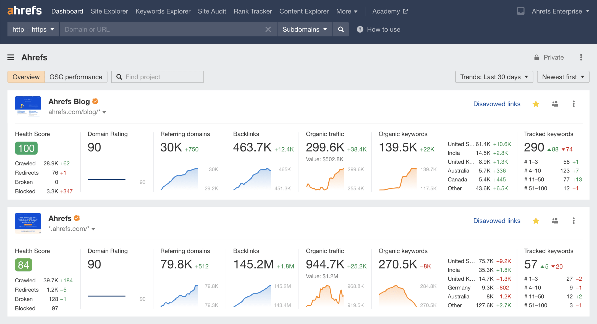
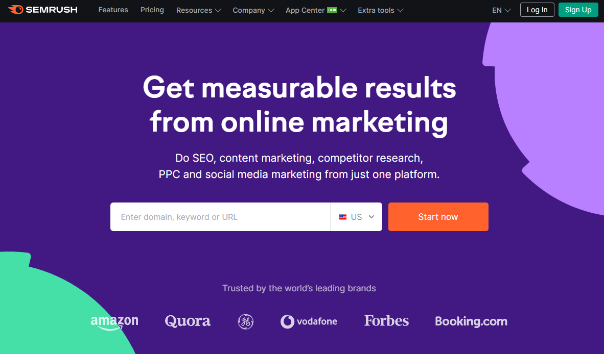
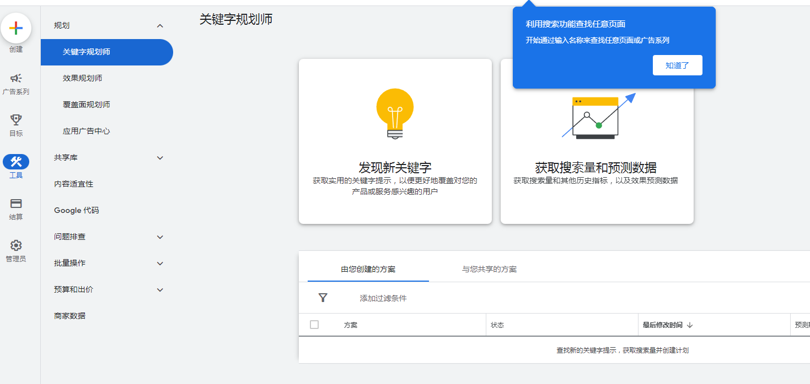
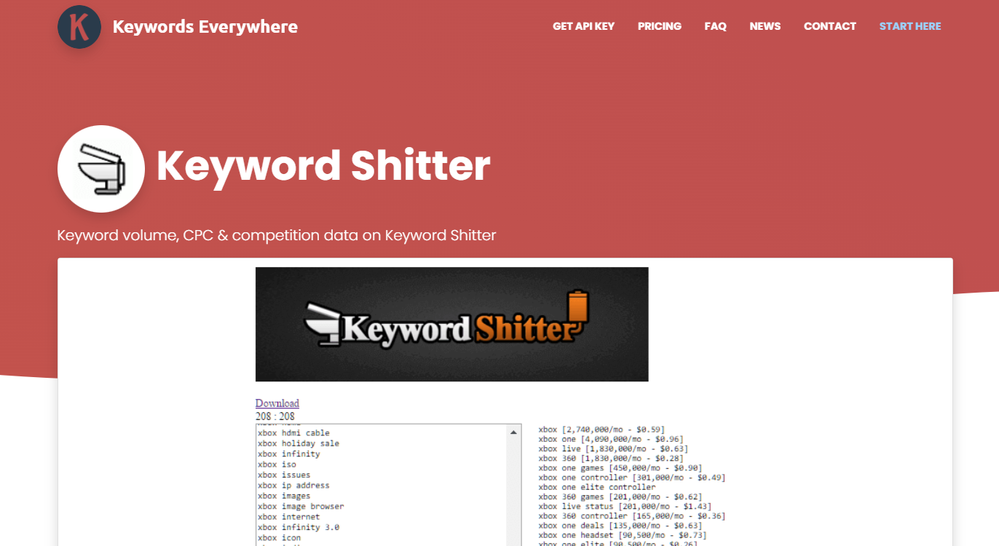
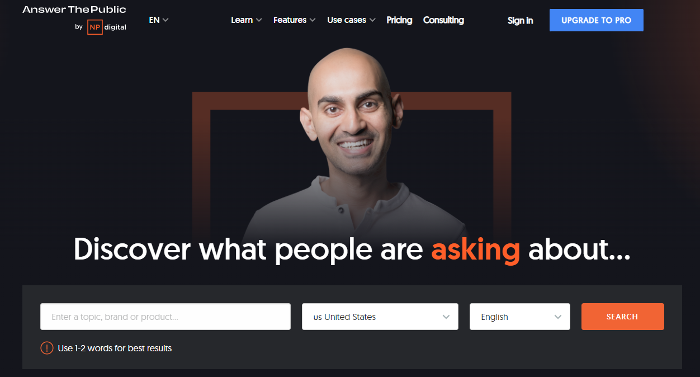
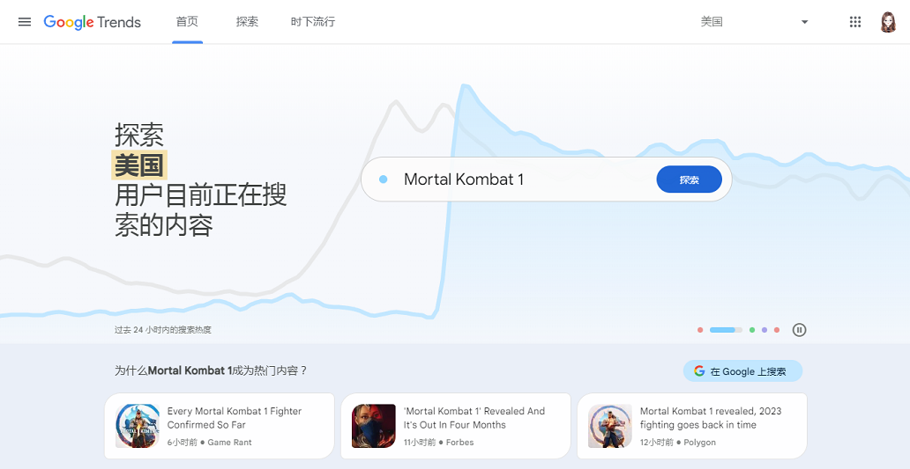

通過關鍵字分析研究工具進行谷歌SEO，分析這些關鍵字的月度搜索量、競爭水平、建議出價等信息，選取相關性高、搜索量適中、競爭不過於激烈的關鍵字。谷歌SEO需要持續跟進，不斷優化網站內容和頁面，提高用戶體驗和搜索引擎可訪問性。
首先要從用戶的角度出發，瞭解他們的需求和搜索習慣。可以使用 Google Analytics 或其他分析工具收集數據，也可以利用社交媒體、問卷調查等方式瞭解用戶行為和偏好。
基於目標用戶的需求和搜索習慣，使用關鍵字研究工具來搜索與網站主題或業務相關的關鍵字，以獲取有價值的關鍵字列表。
1、確定目標關鍵字：確定想要在搜索引擎上優化的核心關鍵字和長尾關鍵字。這些關鍵字需要與網站的主題和業務相關，並且有足夠的搜索量，同時競爭不過於激烈。
2、使用關鍵詞研究工具：使用一款可靠的關鍵詞研究工具來搜索並分析目標關鍵字及其相關的關鍵字，如Google AdWords Keyword Planner、Ahrefs、SEMrush等等。
3、分析關鍵字數據：設計良好的網站架構對SEO排名至關重要，包括清晰的導航菜單、URL命名規範、內部鏈接建設以及網站速度優化。這些因素可以使用戶更加容易地瞭解你的網站，並更容易地查找相關信息。
4、比較關鍵字：對比選定的關鍵字，並找到那些能夠帶來更多流量和收益的關鍵字。也可以參考其他競爭對手的關鍵字選擇，找到一些被忽視的關鍵字。
5、建立內容和頁面：針對選定的關鍵字，建立網站內容和頁面。確保關鍵字在標題、重要段落、圖片文件名以及 anchor text 中得到適當使用。
6、定期檢查和更新：定期進行SEO優化，更新網站內容、關鍵字的使用方式並監測排名。需要注意的是，保持優化的穩定性是非常重要的，不要 使用“黑帽”SEO技巧，否則可能會被搜索引擎懲罰。
7、監控排名和流量：通過Google Analytics或其他排名追蹤工具監測關鍵字的排名和流量變化，實時評估SEO策略的效果，並根據情況對優化策略進行調整和改進。
需要特別指出的是，關鍵字研究工具可以幫助我們找到一些有意思的點子和想法，但作為開發人員，應該嘗試把自己放在目標用戶的角度出發，考慮他們的需求和行為舉止。只有這樣，才能制定出針對用戶需求的最佳SEO策略。
確定目標關鍵字
關鍵詞研究是SEO優化的基礎，其中確定目標關鍵字則是關鍵詞研究的第一步。以下是確定目標關鍵字的步驟：
- 確定核心主題： 首先要明確網站或產品的核心主題，以此為中心來確定相關的關鍵字。
- 列出可能的關鍵字： 根據核心主題，列出可能與其相關的關鍵字，包括通用關鍵字和長尾關鍵字。
- 分析搜索量和競爭水平： 通過使用關鍵詞研究工具，分析每個關鍵字的搜索量和競爭水平，篩選出潛在的目標關鍵字。
- 考慮用戶意圖： 關鍵字除了需要與網站的主題相關，還需要考慮用戶的搜索意圖。比如，有些關鍵字可能會引導用戶尋找特定類型的信息，而另一些可能會讓用戶購買某種產品。
- 評估目標關鍵字： 最後，評估潛在的目標關鍵字，判斷它們是否符合業務目標，是否適合網站內容，是否與用戶意圖相符合，並且是否有足夠的搜索量和較低的競爭水平。
在確定目標關鍵字時，需要注意避免選擇過於寬泛的關鍵字，避免競爭過於激烈或搜索量過低的關鍵字，以及避免使用與網站內容無關的關鍵字。
19個谷歌seo關鍵詞研究工具
關鍵詞研究工具可以幫助我們發現潛在的目標關鍵字，評估每個關鍵字的搜索量和競爭水平，並且瞭解用戶對特定關鍵字的搜索意圖。以下是一些常用的關鍵詞研究工具：
- Ahrefs
Ahrefs 是一款強大的 SEO工具，主要提供競爭對手研究、關鍵詞研究、搜索引擎排名跟蹤、後向鏈接分析以及內容研究等功能。通過 Ahrefs，你可以輕鬆瞭解你及競爭對手在搜索引擎中的表現，瞭解他們的關鍵字和鏈接策略，並基於這些信息優化和改進自己的網站。

同時，Ahrefs 也提供了實時數據更新和可視化報告等功能，使用戶能夠更好地監控和評估他們的優化和營銷活動。總體來說，Ahrefs 是一個綜合的、易於使用的 SEO工具，適用於不同領域的專業人員和數字營銷人員。 - SEMrush：
SEMrush是一款強大的搜索引擎優化和數字營銷工具，提供了豐富的功能和數據來幫助用戶優化網站並進行競爭分析。

總之，SEMrush是一個功能全面的數字營銷工具，能夠提供很多有用的數據和分析來幫助用戶優化他們的網站並進行競爭對手分析。SEMrush可以幫助用戶找到與特定關鍵字相關的高質量關鍵字，並評估這些關鍵字的搜索量和難度。 - Google Keyword Planner：
Google Keyword Planner是Google Ads（Google廣告）提供的一個免費工具，旨在幫助廣告主和營銷人員進行有效的關鍵字研究。

Google Keyword Planner可以讓用戶找到與他們的業務或網站相關的高質量關鍵字，並提供有關這些關鍵字的數據，例如平均每月搜索次數、建議出價等等。此外，用戶還可以使用該工具來查看他們所選定的關鍵字的競爭程度和趨勢，並發現新的關鍵字組合和構思他們的廣告系列。
- Keyword Shitter：
Keyword Shitter是一款免費的關鍵詞研究工具，可以幫助用戶生成大量與其業務或網站相關的關鍵詞。該工具的基本原理是通過用戶輸入的種子關鍵字（seed keywords）自動產生相關關鍵字列表，並將它們輸出成CSV文件格式。

在使用Keyword Shitter生成關鍵字列表時，用戶可能會得到一些不相關或無用的關鍵字，並且這些關鍵字可能會包含不適當或冒犯性語言。因此，用戶需要仔細篩選和評估Keyword Shitter生成的關鍵詞，以確保只有高質量的關鍵字進入他們的關鍵字清單。
- Answer the public：
Answer the Public 是一款免費的內容靈感和關鍵字研究工具，它可以幫助用戶瞭解搜索引擎上與他們業務或網站相關的問題以及疑慮。 Answer the Public通過提供大量針對用戶輸入的種子關鍵字（seed keywords）的問題、比較、定義、預測等相關主題來生成有價值的數據，以此協助用戶增強其SEO和數字營銷策略。

Answer the Public利用搜索引擎上的公開數據彙編了數百個熱門問題，其目的是為用戶提供可靠且精確的相關信息。Answer the Public 不需要註冊，用戶只需輸入種子關鍵字即可快速生成相關問題和建議清單。同時，Answer the Public也內置導出功能，便於後續分類、整理以及其他數字營銷分析操作。
- Google Correlate：
Google Correlate是由谷歌公司開發的一款免費的數據探索工具，它允許用戶查找和比較不同數據集之間的相關性。Google Correlate將一組時間序列數據作為輸入，並返回與這些數據集有關的其它搜索查詢或時間序列數據。與Google搜索類似，Correlate使用自然語言處理技術來確定輸入數據的含義，並基於其與其他數據集之間的相對時間趨勢來查找相關性。

Google Correlate可以預測數據之間的時間趨勢，並提供有關未來趨勢的信息和分析。Google Correlate已於2020年3月被谷歌正式下線，但仍可以通過https://www.google.com/trends/correlate/ 訪問先前建立的相關性搜索。
- Keywords Everywhere：
Keywords Everywhere是一款免費的瀏覽器擴展程序，它可以幫助用戶快速獲取關鍵字的搜索量和相關信息。通過在Google、Bing、Amazon等平臺上進行搜索時，Keywords Everywhere會顯示與搜索詞相關的搜索量、廣告競爭度、建議的相關關鍵詞和長尾關鍵詞等信息。
Keywords Everywhere最初是一個免費的瀏覽器插件，但從2019年10月開始，該服務轉變為按需付費模式，並提供購買關鍵字點數的選項。每次訪問Keywords Everywhere的搜索指數工具都會消耗掉一些關鍵字點數，而且這些點數僅在購買後才能使用。
- Wordtracker Scout： Wordtracker Scout是一款谷歌瀏覽器插件，旨在幫助用戶進行關鍵詞研究並尋找相關的商業機會。與其他關鍵詞研究工具不同，Wordtracker Scout可以直接為用戶提供有關競爭對手、相關產品和服務的數據，並將這些信息集成到搜索結果頁面上。
- SERP Checker： SERP Checker是搜索引擎結果頁面（SERP）檢查工具。它可以幫助用戶分析特定關鍵字或關鍵字短語的搜索結果，並以表格形式呈現給用戶。這款工具可以讓用戶輕鬆瞭解每個搜索結果在搜索引擎結果頁面上的排名順序和相關指標。
- Keyword Difficulty Checker： Keyword Difficulty Checker是一款用於檢測關鍵字難度的工具。在搜索引擎優化（SEO）中，關鍵字難度是指一個特定關鍵詞或關鍵詞短語在搜索結果頁面上的排名難易程度。
- Keyword Tool： Keyword Tool是一種用於搜索關鍵字和短語的工具，通常用於搜索引擎優化（SEO）和在線廣告中。它可以幫助用戶查找與其產品、服務或內容相關的最佳關鍵字，以提高其在搜索引擎結果頁面（SERP）中的排名。
- Keyword Finder： （關鍵字查找器）是一種工具，旨在幫助用戶找到與其產品、服務或內容相關的最佳搜索關鍵字和短語。它通過分析搜索引擎的數據，以確定特定關鍵詞的相關性和可行性情況，可以有效地進行SEO優化和在線廣告。
- LSI Keyowrd： LSI關鍵字（LSI Keyword）是指與主要關鍵字或短語相關的，但不完全匹配的相關關鍵字和短語。LSI是一種自然的、基於語義的搜索引擎算法，它通過分析文檔中出現的詞語之間的相關性來確定文檔的主題。因此，LSI關鍵字通常涉及到與你的主要關鍵字有關聯的其他相關單詞或術語。
- Keyword Revealer： Keyword Revealer是一種關鍵字研究工具，它可以幫助用戶找到與其網站或業務相關的高質量關鍵字。該工具使用Google自動建議和其他數據源來生成有關每個關鍵字的詳細信息。
一旦您確定了目標關鍵詞，就可以將其應用於您的網站內容、元數據（例如標題和描述）以及其他 SEO 策略中，以提高您的谷歌排名。，關鍵詞研究工具只是進行谷歌 SEO 的一個部分。其他策略可能包括創建有價值的內容、使用內部鏈接和外部鏈接等。
分析關鍵字數據
分析關鍵詞數據是優化 SEO 策略的重要步驟。以下是分析關鍵字數據的步驟：
- 收集相關數據： 使用關鍵詞研究工具或其他 SEO工具，收集與您的網站和目標受眾相關的關鍵詞數據。
- 分析搜索量： 瞭解每個關鍵詞的月度搜索量，以幫助確定哪些關鍵詞可能非常有用，哪些則不那麼受歡迎。
- 競爭度分析： 瞭解每個關鍵詞的競爭度。將其與其搜索量進行比較，以便選擇最佳的關鍵詞。
- 排名分析： 檢查您網站排名對於特定關鍵詞。你需要了解自己在谷歌搜索結果頁面上的排名，並嘗試提高排名。這可以通過優化內容、元數據和其他技術實現。
- 監測數據： 繼續監測數據以瞭解您已經採取的優化策略的效果。這將為您提供反饋，告訴您是否需要更新和改進您的策略。
總之，分析關鍵字數據是一項複雜工作，需要綜合考慮多種因素。然而，通過持續地監測和優化您的關鍵詞和 SEO策略，可以使您的網站在 Google 搜索結果頁面上排名更高。
比較關鍵詞
首先需要確定可能與您的網站相關的潛在關鍵詞。可以從您的網站內容入手，看看哪些單詞或短語可能是用戶用於搜索相關內容的。在進行谷歌 SEO 時，比較關鍵詞的方法可以分為以下幾方面：
- 搜索量： 瞭解每個關鍵字的月度搜索量。選擇那些搜索量高但競爭度較低的關鍵字可能更容易獲得流量。
- 競爭度： 瞭解每個關鍵字的競爭度。將其與其搜索量進行比較，以便選擇最佳的關鍵字。
- 相關性： 選取那些與您的網站和產品相關的關鍵字。確保所選的關鍵字能夠吸引您的目標受眾。
- 長尾詞： 長尾關鍵字是那些較長的、非常具體的短語。雖然它們的搜索量可能較低，但是這些關鍵字可能比競爭度更低且更具有針對性。
- 區別度： 選擇那些有明顯區別的關鍵字。這有助於使您的網站在搜索結果中脫穎而出。
總之，在比較關鍵字時，您需要分析不同關鍵字的多種因素，並根據自己的需求和目標做出最終選擇。
建立內容和頁面
建立內容和頁面是網站開發中非常重要的一步。以下是一些指導步驟：
- 確定網站類型和目標受眾：在設計和建立網站之前，需要明確網站的類型（例如博客、商業、個人等）以及目標受眾。這將有助於確保您的內容和頁面設計符合目標受眾的需求和偏好。
- 規劃網站結構：設計一個清晰的網站結構非常重要，這可以使用戶輕鬆找到他們需要的信息。確定各頁面的主題和子主題，並設計一個易於導航的菜單系統。
- 編寫高質量的內容： 網站內容應具備真實、有價值、有趣並容易理解等特點。在創建內容時，要注意使用正確的語法和拼寫，以及適當的關鍵字密度等因素。
- 選擇合適的圖片和多媒體內容： 通過添加圖像、視頻、音頻等多媒體內容，可以使您的內容更有吸引力和親和力。要確保所有圖片都是高質量的且與您的內容相關聯。
- 確保網站視覺上的吸引力： 網站的外觀和感覺對用戶留下深刻印象，因此需要選擇適合您網站類型的顏色方案、字體、版式等。
- .測試和批准： 在網站開發的過程中，需要進行測試以確保所有內容和頁面都可以正常工作並符合您的期望。一旦批准，就可以發佈和推廣網站了。
總之，在建立內容和頁面時，需要考慮多個因素，並確保所有元素都與您的主題和目標受眾相符。希望這些建議能對您有所幫助！
監控排名和流量
監控排名和流量是網站管理中非常重要的一步，可以幫助您瞭解關鍵詞排名、流量來源及用戶訪問情況。以下是一些指導步驟：
- 使用分析工具：例如Google Analytics等可以幫助您跟蹤網站的流量，頁面瀏覽次數，訪問時間，訪客來源，以及在網站上花費的時間。
- 關鍵字排名：使用關鍵字搜索工具，例如 SEMrush, Moz Pro等可以查詢您的關鍵字在搜索引擎中的排名情況。這可以幫助您衡量當前的SEO效果。
- 競品研究： 使用相關工具，例如 SimilarWeb等來監控競爭對手的流量、它們的目標受眾、廣告和營銷策略等信息，可能有助於您瞭解自己的優缺點，並作出相應的調整。
- 搜索引擎平臺： 通過在 Google Search Console 提交站點地圖，您可以輕鬆監控您的網站在 Google 上的表現，並查看相關查詢的印象次數和點擊率。
總之，為了瞭解站點的總體表現，您應該同時監控排名和流量。隨著您實施更多的優化技術，應該持續跟蹤網站的性能並根據結果實施更好的優化措施，以提高網站質量和受眾參與。
關於關鍵詞分析研究工具的常見問答
什麼是關鍵詞分析研究工具？
關鍵詞分析研究工具是一組用於幫助網站管理員和谷歌 SEO 專家確定哪些關鍵字將為他們的網站和內容帶來最多流量的應用程序和服務。此類工具通常提供關鍵字建議、搜索量估計、競爭度量等功能。
有哪些常用關鍵詞分析研究工具？
市場上有很多種不同的關鍵詞分析研究工具可供選擇。其中包括 Google AdWords Keyword Planner、Ahrefs、SEMRush、Moz Keyword Explorer 等。這些工具都提供了強大的功能，可以幫助你確定哪些關鍵字將帶來最多流量。
什麼是關鍵詞競爭度？
關鍵詞競爭度指的是某個關鍵字的使用頻率以及該關鍵字在各種網站和內容中的廣泛程度。如果某個關鍵字的競爭度量很高，那麼你需要花費更多的時間和精力才能獲得更高的排名。因此，建議優先選擇競爭度相對較低的關鍵字來進行針對性的優化。